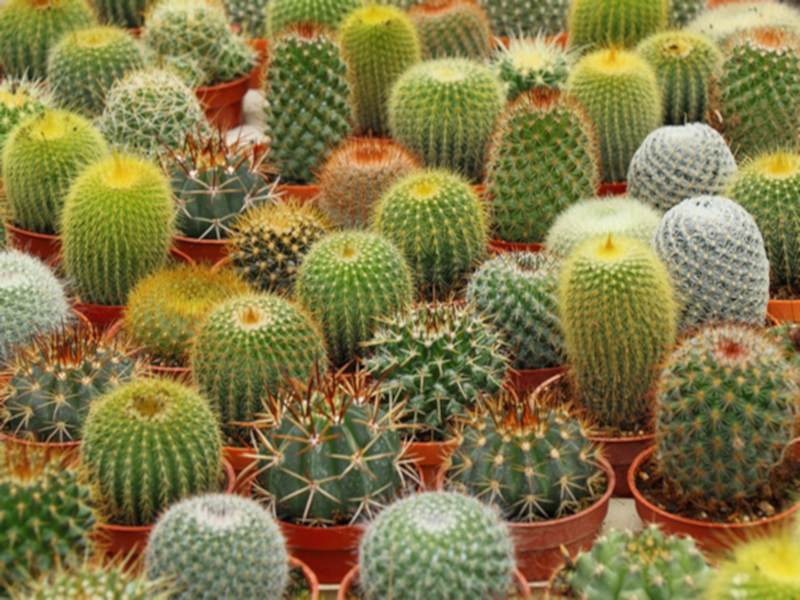
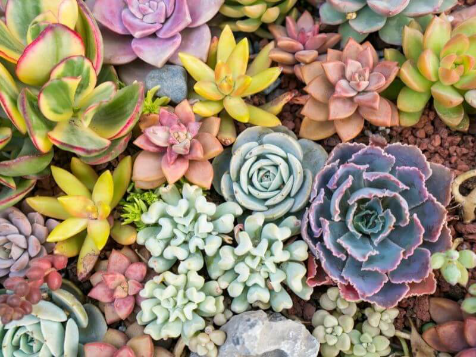
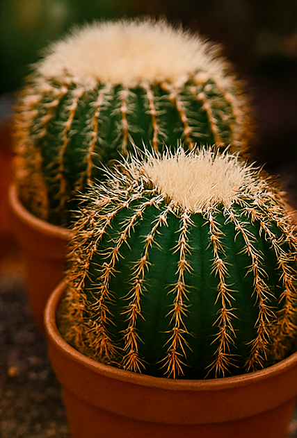
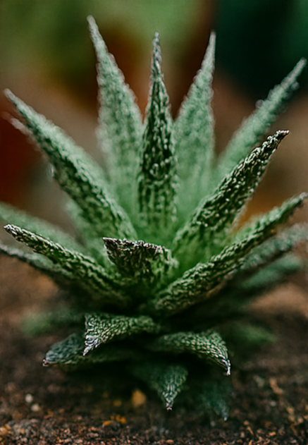
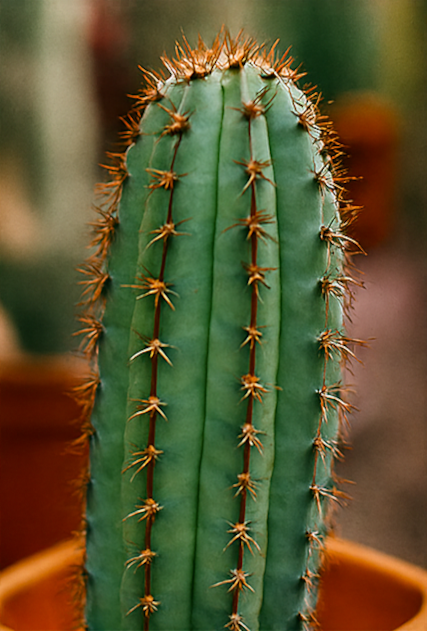

📸 Otwórz pełną galerię
🧪 Rozmaitości
Wydarzenia 2026
Poniżej imprezy z kalendarza PTMK z terminem po 10 kwietnia 2026. Zawsze potwierdź datę i program u organizatora.
-
12.04.202611. Schweinfurter Kakteen & Raritätenbörse (targi)
-
17–19.04.2026Śląskie Kaktusowe Dni
-
18–19.04.202640. Targi Kaktusów 2026
-
25–26.04.2026Intercactus 2026
-
1–3.05.2026 (czw–sb)Kaktusiada 2026 — jubileusz 60-lecia PTMK
-
15–17.05.2026Wystawa kaktusów
-
16–17.05.202642. wystawa kaktusów OG Burgstädt
-
5–7.06.2026Wystawa kaktusów i sukulentów
-
9–14.06.2026Wystawa w Palmiarni w Gliwicach
-
13.06.2026Exotika Pobeskydí
-
20–21.06.2026Wystawa kaktusów z kiermaszem
-
14–16.08.2026Styrian Cactus Days 2026
-
29–30.08.2026Krajowa Wystawa Sukulentów
Pełny, aktualizowany wykaz: ptmk.pl — Kalendarz imprez. Brakujące imprezy zgłaszać: admin@ptmk.pl.
Napisz do mnie
Masz pytanie o kaktusy lub sukulenty? Wyślij wiadomość — odpowiem najszybciej jak się da.